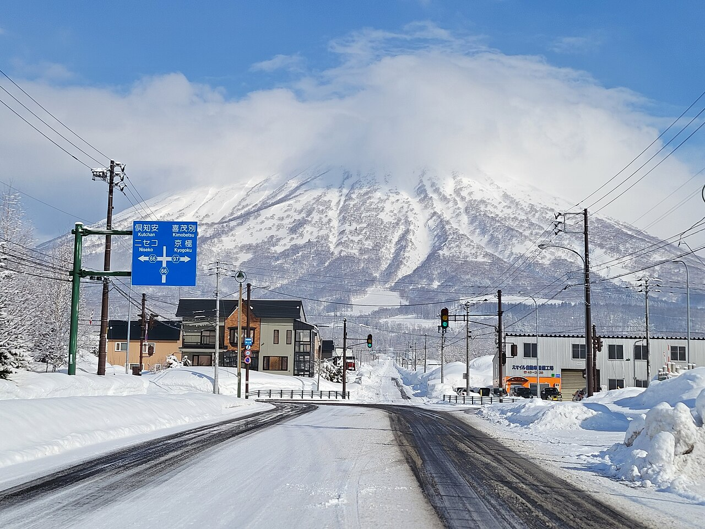

Mt. Yotei — the snow cone Icon · 8/10
A textbook stratovolcano so symmetrical locals call it "Ezo Fuji." In winter it looms cloud-capped and white over the whole valley; in green season it's a deep emerald pyramid. It anchors the entire Niseko skyline — your reliable hero subject all week.
From Hirafu: in view everywhere · 15–20 min to base
Best light: cold clear dawn (alpenglow) or blue hour
The frame: put a low foreground (a fence, road, or rime-frosted trees) in the bottom third so the symmetrical cone fills the upper two-thirds against clean sky.